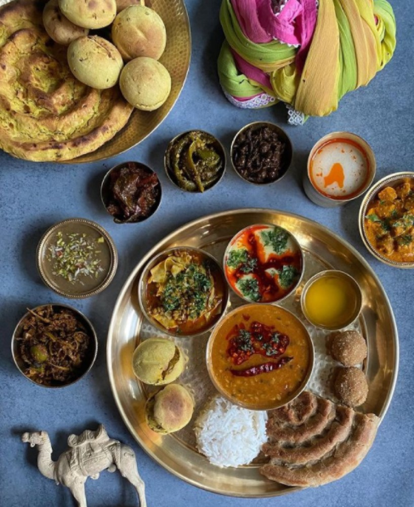

Northwest India
Rajasthani Cuisine
Desert-adapted cooking, built around scarce water and long-lasting ingredients — with two very different culinary traditions inside it.
Desert-adapted cooking, built around scarce water and long-lasting ingredients — with two very different culinary traditions inside it.
Much of Rajasthan sits within or on the edge of the Thar Desert, and the cuisine is, more than almost any other Indian regional tradition, a direct engineering response to its environment. Fresh vegetables were historically scarce and water was precious, so Rajasthani cooking developed around ingredients that could survive drought and long storage: dried lentils and beans, dried desert berries and pods (like ker and sangri, gathered from native desert shrubs), buttermilk and other dairy standing in for fresh produce, and generous amounts of ghee to add richness where fresh ingredients couldn't.
Rajasthan's food history carries a real internal split. On one side is the Rajput tradition — the warrior-noble class whose royal kitchens historically included game and meat, developed around hunting culture. Laal maas ("red meat"), a fiery mutton curry associated with royal Rajput feasts, is the clearest surviving example. On the other side is the Marwari tradition — Rajasthan's major merchant community, historically Jain or Vaishnav Hindu, and strictly vegetarian. It was the Marwari community's extensive trading networks, reaching across India, that carried Rajasthani vegetarian food — including what's now sold across the country as "Rajasthani thali" — far beyond the state's borders.
The state's signature dish is a useful case study in how the cuisine works: baati are hard wheat-flour rolls, traditionally baked (originally in embers) until dense and dry — a bread built to last, not to be eaten fresh and soft. They're served crushed into ghee alongside dal (lentils) and churma (a sweet, crumbled wheat-and-jaggery mixture). Every component of the dish is built for a hot, dry climate and for keeping without refrigeration — a theme that runs through nearly the entire cuisine.
